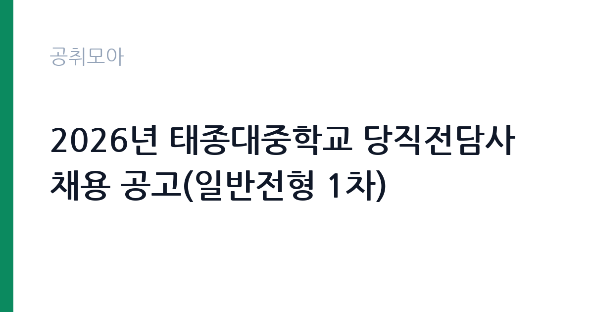

[교육청] 2026년 태종대중학교 당직전담사 채용 공고(일반전형 1차)
부산광역시교육청 부산광역시교육청학교행정지원본부 학교채용지원팀 · 부산 · 마감 2026-11-02 (D-6) · 출처 나라일터

한눈에 보는 모집 조건
| 기관 | 부산광역시교육청 부산광역시교육청학교행정지원본부 학교채용지원팀 |
|---|---|
| 공고명 | 2026년 태종대중학교 당직전담사 채용 공고(일반전형 1차) |
| 고용형태 | 정규직 |
| 근무지 | 부산 |
| 게시일 | 2026-10-27 |
| 마감일 | 2026-11-02 (D-6) |
지원자격, 이렇게 읽으세요
- 당직전담사 1명
- 접수 ~2026-11-02 마감
- 세부 조건은 원문 공고문 확인
정규직 채용은 기간의 정함이 없는 근로계약을 전제로 합니다. 수습 기간을 두고 평가한 뒤 정규직으로 확정하는 절차가 일반적이며 기관의 인사 규정과 임금 체계를 적용받습니다. 이번 공고는 부산광역시교육청 부산광역시교육청학교행정지원본부 학교채용지원팀가 직접 진행하는 자체 전형입니다. 응시 자격은 공고문의 응시자격 항목에 직급별로 나뉘어 제시됩니다. 학력·경력·자격 요건을 모두 충족해야 하며 하나라도 빠지면 서류에서 탈락합니다. 경력은 증명서로 입증해야 하므로 재직증명서와 경력증명서를 미리 준비하십시오. 우대 사항은 가점으로 반영되므로 해당 여부를 확인해 증빙을 붙여야 합니다. 결격사유 조회와 신원 확인 절차가 공통으로 적용됩니다. 제출서류는 공고문에 적힌 순서대로 정리하면 담당자가 확인하기 쉽습니다. 학력이나 전공 요건이 없는 공고라도 제출서류 목록은 그대로 적용되므로 서류 준비 부담은 줄지 않습니다. 공고문의 응시자격 표를 보면 자격 항목이 여러 줄로 나뉘어 있으므로, 각 줄을 하나씩 체크하며 본인 해당 여부를 표시해 두면 누락을 줄일 수 있습니다. 이 공고 원문에 적힌 응시 조건 문구는 '경력증명서, 자격증사본 미제출 시 서류심사 점수에 반영되지 않습니다.'입니다. 문구를 그대로 읽고 본인 해당 여부를 하나씩 표시해 두면 서류 단계에서 탈락하는 일을 줄일 수 있습니다.
이 공고의 포인트
이 건은 부산광역시교육청 부산광역시교육청학교행정지원본부 학교채용지원팀가 같은 시기에 낸 2개 모집분야 가운데 현장 실무 직무입니다. 다른 직무 공고와 요건이 다르므로 지원 전에 모집분야 표를 대조해야 합니다. 이 공고의 첫 번째 포인트는 고용 형태입니다. 수습 기간 평가를 통과하면 기간의 정함이 없는 신분이 되어 고용이 안정됩니다. 두 번째는 업무 범위가 명확하다는 점입니다. 현장 실무 직무로 채용되므로 배치 이후 담당 업무가 크게 흔들리지 않습니다. 세 번째는 근무지입니다. 부산 지역 근무로 수도권 공고에 비해 지원자 분포가 넓지 않아 상대적으로 경쟁이 분산되는 경우가 있습니다. 지역 기반 채용이라 거주지와 통근 가능성이 실질적인 판단 기준이 됩니다. 같은 직무 공고 중에서는 접수 마감이 가장 빨라 일정을 앞당겨 잡아야 합니다. 다만 선발 인원이 1명으로 많지 않아 자격을 갖춘 지원자가 몰리면 경쟁률이 높아질 수 있습니다.
전형은 어떻게 진행되나
전형은 서류심사와 면접심사를 기본으로 하고 직무에 따라 필기나 실기, 체력검정이 추가됩니다. 서류 단계에서는 응시자격 충족 여부와 제출서류 형식을 확인하며 이 단계에서 탈락하는 지원자가 적지 않습니다. 면접은 직무 이해도와 경험을 확인하는 방식으로 진행되고 발표는 개별 통보나 홈페이지 게시로 이뤄집니다. 최종합격 이후에는 결격사유 조회와 채용 신체검사가 이어지며 이 절차에서 문제가 확인되면 합격이 취소될 수 있습니다. 구체적인 전형 단계와 배점은 공고문에 표로 정리되어 있으니 원문을 기준으로 준비하십시오. 전형 일정이 공고문에 날짜로 명시되어 있으니 달력에 옮겨 두고 준비하십시오.
원문에서 확인한 전형 방식
[2026년 태종대중학교 당직전담사 채용 공고(일반전형 1차)] 1. 채용분야 및 인원: 당직전담사 1명 2. 채용기간: 2026. 11. 12.~(정년) 3. 근무시간: (격일제) 평일16:20~08:20, 주말08:20~08:20 4. 원서접수 ○접수기간: 2026. 10. 27.(화)~2026. 11. 2.(월) 18:00 ○접수방법: 온라인(이메일), 우편, 방문 ○접수장소: 부산광역시 부산진구 엄광로182번길 49 학교행정지원본부 2층 채용지원팀 (접수 다음날까지 접수 완료 문자를 받지 못하신 경우, 602-1940으로 반드시 연락 바랍니다.) 5. 경력증명서, 자격증사본 미제출 시 서류심사 점수에 반영되지 않습니다. 6. 학교행정지원본부의 학교별 채용 공고에 중복 지원 불가합니다. (1개 학교만 지원 가능) 자세한 사항은 [붙임] 파일을 참고해 주시기 바라며 업무 및 근무 관련 문의는 태종대중학교 행정실(051-400-2711), 공고 관련 문의는 학교행정지원본부(051-602-1936, 1940)로 연락바랍니다.
이런 분께 추천해요
- 공고 직무와 관련된 경험이 있는 분
- 기관의 사업에 관심을 갖고 사전 조사를 해온 분
- 정해진 절차와 기한을 지킬 수 있는 분
지원 전 체크리스트
- 응시자격 요건과 경력 기준을 충족하는가 — 경력은 증명서로 입증해야 합니다
- 수습 기간과 정규직 전환 조건을 확인했는가
- 제출서류 목록을 모두 준비했는가 — 누락 시 서류 단계에서 탈락합니다
- 접수 마감 2026-11-02 이전에 접수 방식을 확인해 제출했는가
모집 일정과 제출 타이밍
접수 마감은 2026-11-02이고 공고는 2026-10-27에 게시되었습니다. 준비 기간 6일 안에 서류 작성, 증빙 발급, 접수를 모두 마쳐야 하므로 주말을 포함해 일정을 미리 나누는 것이 좋습니다. 특히 경력 기술서나 직무수행계획서를 요구하는 공고는 작성에 시간이 걸리므로 첫날 초안을 잡으십시오. 서류 합격자 발표와 면접 사이 간격이 짧은 경우가 많아 면접 예상 질문은 서류 제출 전에 정리해 두는 편이 유리합니다. 마감 직전에는 접속이 몰리므로 여유를 두고 제출하십시오. 공휴일이 끼어 있으면 증명서 발급이 늦어질 수 있으니 발급 일정을 앞당기십시오.
직무 이해하기: 교육청
교육기관은 학교 교육과 교원 연수, 교육 행정을 담당합니다. 교육청은 관내 학교를 지원하고, 대학은 학사와 연구, 학생 지원 업무를 운영합니다. 예산과 인사 규정이 교육부 지침과 자체 규정을 함께 따르므로 절차가 엄격합니다. 이 공고의 직무는 기관이 맡은 사업을 현장과 사무 양쪽에서 수행하는 실무입니다. 담당 업무는 배치 부서에 따라 정해지며, 문서 작성과 자료 정리 같은 사무 업무와 현장 확인·지원 업무가 함께 붙는 경우가 많습니다. 업무 지침과 절차가 정해져 있어 그에 따라 처리하고 처리 결과를 기록으로 남깁니다. 민원이나 이용자를 대면하는 업무가 포함되면 응대 태도가 평가에 반영됩니다. 구체적인 업무 범위는 공고문의 직무 설명 항목에서 확인하십시오. 근무조는 사업 일정과 기상 상황에 맞춰 편성되므로 면접에서 배치 구역을 확인하는 것이 좋습니다. 업무 강도와 근무 시간대는 부서 배치에 따라 달라지므로 면접에서 확인하는 것이 가장 정확합니다. 이 건의 근무 대상 지역·부서는 원문 기준 '일반전형 1차'입니다 원문에 '경력증명서, 자격증사본 미제출 시 서류심사 점수에 반영되지 않습니다'라는 조건이 명시되어 있습니다.
자기소개서 작성 팁
자기소개서는 지원 동기, 직무 경험, 기여 방안의 세 축으로 구성하십시오. 첫 문단에서 지원 기관의 어떤 사업에 기여하고 싶은지 한 문장으로 밝히고 이후 경험을 구체적으로 서술합니다. 수치와 사례를 넣으면 설득력이 올라갑니다. 마지막에는 장기적으로 어떤 역할을 맡고 싶은지 방향을 제시하십시오. 직무 경험이 많지 않다면 경험의 양보다 과정을 구체적으로 쓰는 편이 낫습니다. 어떤 상황에서 무엇을 판단했고 어떤 결과가 나왔는지 순서대로 서술하면 신뢰가 생깁니다. 지원 동기와 기여 방안은 한 문단씩 짧게 유지하고, 가장 자신 있는 경험에 분량을 몰아주십시오. 마지막 문장은 포부보다 구체적인 실행 계획으로 끝내는 것이 좋습니다.
면접 준비 포인트
면접에서는 직무 이해도와 조직 적응력을 확인합니다. 지원한 기관이 하는 일을 어느 정도 알고 있는지, 맡은 업무를 어떻게 처리할 것인지 묻습니다. 구체적인 경험을 근거로 답하는 것이 중요하며 추상적인 포부만 나열하면 평가가 낮아집니다. 갈등 상황이나 업무 과부하 상황에서의 대응 방식도 자주 질문합니다. 본인 경험을 말할 때는 기간, 역할, 결과를 순서대로 정리해 두면 질문이 바뀌어도 활용할 수 있습니다. 답변 시간이 짧게 정해져 있는 경우가 있으므로 핵심 문장을 먼저 말하고 근거를 붙이는 방식이 유리합니다.
급여·근무조건 읽는 법
부산광역시교육청 부산광역시교육청학교행정지원본부 학교채용지원팀의 구체적인 보수 수치는 이 공고 원문의 처우 항목과 보수표에서 확인해야 합니다. 공시 자료로 확인되지 않은 금액은 이 글에서 추정해 제시하지 않습니다. 알리오 2025년 결산 공시 기준 공공기관 전체 일반정규직 1인당 평균보수는 7,376만 9천원, 신입사원 평균초임은 4,031만 6천원입니다(무기계약직 미포함). 보수는 채용 신분과 기관의 임금 규정에 따라 정해집니다. 공무직과 기간제는 기관 임금표를, 임기제공무원은 연봉등급제를 적용받습니다. 공고문에 금액이 제시되지 않은 경우에는 처우 항목이나 첨부된 보수표를 확인해야 합니다.수당과 상여 포함 여부에 따라 실수령액이 달라집니다. 2026년 적용 최저임금은 시급 10,320원, 월 환산 2,156,880원(주 40시간·209시간 기준)입니다. 고용노동부 고시 제2025-47호로 확정된 금액입니다. 공고문에 금액이 제시되지 않은 항목은 원문 보수표나 처우 설명에서 확인해야 하며 확인되지 않은 수치는 쓰지 않는 것이 원칙입니다. 비교할 때는 월 급여뿐 아니라 상여·명절휴가비·복지포인트·초과근무수당까지 포함한 연간 총액으로 계산하십시오. 기간제라면 계약 기간 동안의 총액을, 무기계약이라면 호봉 상승과 정년까지의 누적 소득을 기준으로 판단하는 편이 정확합니다.
자주 묻는 질문
- 선발 인원은 몇 명인가요?
공고문 기준 1명입니다. 직종별로 인원이 나뉘는 경우가 있으니 모집분야 항목을 함께 확인하십시오. - 근무지는 어디인가요?
부산 지역의 부산광역시교육청 부산광역시교육청학교행정지원본부 학교채용지원팀 소속 근무지입니다. 세부 주소와 출퇴근 조건은 원문 공고문에서 확인할 수 있습니다. - 보수는 얼마인가요?
채용 신분(정규직)과 기관 임금 규정에 따라 정해지며 구체적인 금액은 공고문 처우 항목에 제시됩니다. 금액이 공개되지 않은 경우에는 원문의 보수표를 확인하십시오.
함께 보면 좋은 공고
[교육청] [(긴급)2026년 명지초등학교 환경실무사 채용공고(일반전형 1차) — 마감 2026-10-30[교육청] 성덕고등학교 2026학년도 미화원 채용 공고 — 마감 2026-11-06[교육청] 2026학년도 인천송현초등학교 사서(대체) 채용 공고 — 마감 2026-10-30출처: 나라일터 공개정보를 바탕으로 공취모아가 정리한 안내글입니다. 모집 조건·일정은 변경될 수 있으니 지원 전 반드시 원문 공고문을 확인하세요. 본 글은 정보 제공용이며 합격을 보장하지 않습니다.